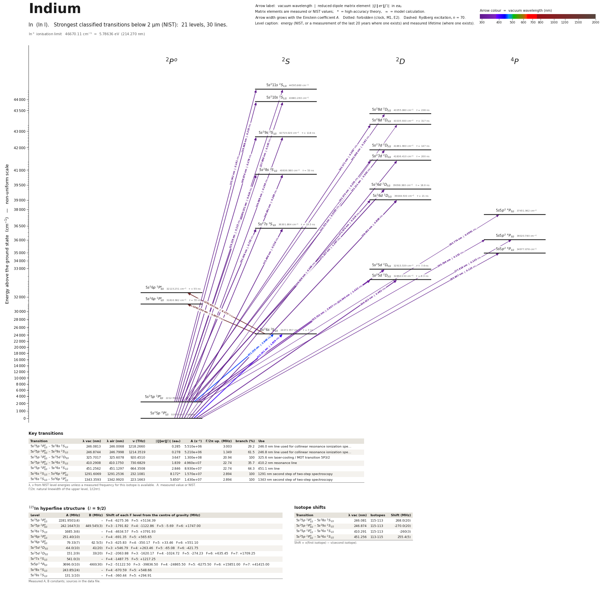

Indium energy level diagram
Energy levels and transitions of neutral indium (In I): the 30 strongest classified lines below 2 µm from the NIST Atomic Spectra Database and the 21 levels they connect, each line with its vacuum wavelength, frequency and, for 30 of them, the reduced dipole matrix element derived from the NIST transition rate. Measured lifetimes, transition rates, hyperfine constants and isotope shifts from the literature are included, each with its citation.
Hover a line or a level to isolate it, click to keep it selected. Scroll to zoom, drag to move.

Download: diagram (PDF) diagram (SVG) transitions (CSV) levels (CSV) source code

Key transitions of indium
| Transition | λ vac (nm) | λ air (nm) | ν (THz) | |⟨J‖er‖J′⟩| (ea₀) | A (s⁻¹) | Γ/2π up. (MHz) | branch (%) | Use |
|---|---|---|---|---|---|---|---|---|
| 5s25p 2P°1/2 – 5s28s 2S1/2 | 246.0813 | 246.0068 | 1218.2660 | 0.285 | 5.510e+06 | 3.003 | 29.2 | 246.0 nm line used for collinear resonance ionization spe… |
| 5s25p 2P°3/2 – 5s29s 2S1/2 | 246.8744 | 246.7998 | 1214.3519 | 0.278 | 5.210e+06 | 1.349 | 61.5 | 246.8 nm line used for collinear resonance ionization spe… |
| 5s25p 2P°3/2 – 5s25d 2D5/2 | 325.7017 | 325.6078 | 920.4510 | 3.647 | 1.300e+08 | 20.94 | 100 | 325.6 nm laser-cooling / MOT transition 5P3/2 |
| 5s25p 2P°1/2 – 5s26s 2S1/2 | 410.2908 | 410.1750 | 730.6829 | 1.839 | 4.960e+07 | 22.74 | 35.7 | 410.2 nm resonance line |
| 5s25p 2P°3/2 – 5s26s 2S1/2 | 451.2562 | 451.1297 | 664.3508 | 2.846 | 8.930e+07 | 22.74 | 64.3 | 451.1 nm line |
| 5s26s 2S1/2 – 5s26p 2P°3/2 | 1291.6069 | 1291.2536 | 232.1081 | 8.172* | 1.570e+07 | 2.894 | 100 | 1291 nm second step of two-step spectroscopy |
| 5s26s 2S1/2 – 5s26p 2P°1/2 | 1343.3593 | 1342.9920 | 223.1663 | 5.850* | 1.430e+07 | 2.894 | 100 | 1343 nm second step of two-step spectroscopy |
λ, ν from NIST level energies unless a measured frequency for this isotope is available. A: measured value or NIST. Γ/2π: natural linewidth of the upper level, 1/(2πτ).
115In hyperfine structure (I = 9/2)
| Level | A (MHz) | B (MHz) | Shift of each F level from the centre of gravity (MHz) |
|---|---|---|---|
| 5s25p 2P°1/2 | 2281.9501(4) | – | F=4: -6275.36 F=5: +5134.39 |
| 5s25p 2P°3/2 | 242.1647(3) | 449.545(3) | F=3: -1791.82 F=4: -1122.86 F=5: -5.69 F=6: +1747.00 |
| 5s26s 2S1/2 | 1685.3(6) | – | F=4: -4634.57 F=5: +3791.93 |
| 5s26p 2P°1/2 | 251.40(10) | – | F=4: -691.35 F=5: +565.65 |
| 5s26p 2P°3/2 | 79.33(7) | 62.5(5) | F=3: -625.83 F=4: -350.17 F=5: +33.46 F=6: +551.10 |
| 5s25d 2D3/2 | -64.0(10) | 41(20) | F=3: +546.79 F=4: +263.46 F=5: -65.08 F=6: -421.75 |
| 5s25d 2D5/2 | 151.2(9) | 33(20) | F=2: -2063.88 F=3: -1620.17 F=4: -1024.72 F=5: -274.23 F=6: +635.45 F=7: +1709.25 |
| 5s27s 2S1/2 | 541.0(3) | – | F=4: -1487.75 F=5: +1217.25 |
| 5s5p2 4P5/2 | 3696.0(10) | -660(30) | F=2: -51122.50 F=3: -39836.50 F=4: -24865.50 F=5: -6275.50 F=6: +15851.00 F=7: +41415.00 |
| 5s28s 2S1/2 | 243.85(24) | – | F=4: -670.59 F=5: +548.66 |
| 5s29s 2S1/2 | 131.1(10) | – | F=4: -360.44 F=5: +294.91 |
Measured A, B constants; sources in the data file.
Isotope shifts
| Transition | λ vac (nm) | Isotopes | Shift (MHz) |
|---|---|---|---|
| 5s25p 2P°1/2 – 5s28s 2S1/2 | 246.081 | 115-113 | 268.0(20) |
| 5s25p 2P°3/2 – 5s29s 2S1/2 | 246.874 | 115-113 | -270.0(20) |
| 5s25p 2P°1/2 – 5s26s 2S1/2 | 410.291 | 115-113 | -260(3) |
| 5s25p 2P°3/2 – 5s26s 2S1/2 | 451.256 | 113-115 | 255.4(5) |
Shift = ν(first isotope) − ν(second isotope).
Closed and nearly closed transitions of indium
| Transition | λ vacuum (nm) | Lower level | A (s⁻¹) | Leak per scattered photon | Photons before a leak | Where the leak goes |
|---|---|---|---|---|---|---|
| 5s25p 2P°3/2 → 5s25d 2D5/2 | 325.7017 | metastable | 1.300e+08 NIST | 2 × 10−4 from theory | 5,000 | 5s26p 2P°3/2 2 × 10−4* |
A transition is closed when its upper level can decay only to the level it was excited from, so the atom keeps scattering photons. “closed”: among the levels NIST lists, no other level below the upper level has the opposite parity and |ΔJ| ≤ 1, so no other electric-dipole decay exists. Otherwise the leak is the sum of the branching ratios of the other decay lines of the upper level (or 1 − branching ratio where that of the line itself has been measured), and the number of photons is 1 / leak. “≥” and “≤”: at least one possible decay path has no listed rate, so the leak is a lower limit. These numbers are derived from the branching ratios, lifetimes and rates of this page, not measured as such; the tag names the weakest of the inputs, * marks theory and ≈ a model or semi-empirical calculation. Listed: lines that start on the ground level or on a metastable level and leak at most 10 %, unless more than three possible decay paths have no listed rate. Fine-structure levels only: hyperfine and Zeeman dark states and forbidden decays without a listed rate are not considered. Select a line in the diagram for the full list of its leak channels.
Listed In transitions below 2 µm
| Lower level | Upper level | λ vacuum (nm) | λ air (nm) | ν (THz) | Type | |⟨J‖er‖J′⟩| (ea₀) | A (s⁻¹) | Branching (%) | Source of matrix element / A |
|---|---|---|---|---|---|---|---|---|---|
| 5s25p 2P°1/2 | 5s211s 2S1/2 | 224.2361 | 224.1665 | 1336.9503 | E1 | 0.113 NIST | 1.140e+06 NIST | – | NIST ASD (accuracy C+) |
| 5s25p 2P°1/2 | 5s210s 2S1/2 | 227.8877 | 227.8174 | 1315.5271 | E1 | 0.145 NIST | 1.810e+06 NIST | – | NIST ASD (accuracy C+) |
| 5s25p 2P°1/2 | 5s28d 2D3/2 | 230.7554 | 230.6844 | 1299.1785 | E1 | 0.0585 NIST | 1.410e+05 NIST | 4.47 | NIST ASD (accuracy C+) |
| 5s25p 2P°1/2 | 5s29s 2S1/2 | 234.0878 | 234.0160 | 1280.6840 | E1 | 0.196 NIST | 3.040e+06 NIST | 35.9 | NIST ASD (accuracy C+) |
| 5s25p 2P°3/2 | 5s211s 2S1/2 | 235.9422 | 235.8701 | 1270.6182 | E1 | 0.161 NIST | 2.010e+06 NIST | – | NIST ASD (accuracy C+) |
| 5s25p 2P°1/2 | 5s27d 2D3/2 | 239.0262 | 238.9534 | 1254.2240 | E1 | 0.284 NIST | 2.990e+06 NIST | 59.8 | NIST ASD (accuracy C+) |
| 5s25p 2P°3/2 | 5s210s 2S1/2 | 239.9885 | 239.9155 | 1249.1950 | E1 | 0.210 NIST | 3.220e+06 NIST | – | NIST ASD (accuracy C+) |
| 5s25p 2P°3/2 | 5s28d 2D5/2 | 243.0578 | 242.9840 | 1233.4206 | E1 | 0.182 NIST | 7.830e+05 NIST | 18.6 | NIST ASD (accuracy C+) |
| 5s25p 2P°3/2 | 5s28d 2D3/2 | 243.1710 | 243.0972 | 1232.8465 | E1 | 0.202 theory | 1.430e+06 theory | 45.3 | Safronova, Safronova, Kozlov, Phys. Rev. A 76, 022501 (2007), Table II (all-order SD) |
| 5s25p 2P°1/2 | 5s28s 2S1/2 | 246.0813 | 246.0068 | 1218.2660 | E1 | 0.285 NIST | 5.510e+06 NIST | 29.2 | NIST ASD (accuracy C+) |
| 5s25p 2P°3/2 | 5s29s 2S1/2 | 246.8744 | 246.7998 | 1214.3519 | E1 | 0.278 NIST | 5.210e+06 NIST | 61.5 | NIST ASD (accuracy C+) |
| 5s25p 2P°3/2 | 5s27d 2D5/2 | 252.2109 | 252.1350 | 1188.6579 | E1 | 0.503 NIST | 5.330e+06 NIST | 78.3 | NIST ASD (accuracy C+) |
| 5s25p 2P°3/2 | 5s27d 2D3/2 | 252.3735 | 252.2976 | 1187.8920 | E1 | 0.201 NIST | 1.270e+06 NIST | 25.4 | NIST ASD (accuracy C+) |
| 5s25p 2P°1/2 | 5s26d 2D3/2 | 256.0916 | 256.0148 | 1170.6455 | E1 | 0.808 NIST | 1.970e+07 NIST | 41.4 | NIST ASD (accuracy B) |
| 5s25p 2P°3/2 | 5s28s 2S1/2 | 260.2514 | 260.1737 | 1151.9340 | E1 | 0.414 NIST | 9.850e+06 NIST | 52.2 | NIST ASD (accuracy C+) |
| 5s25p 2P°3/2 | 5s26d 2D5/2 | 271.1072 | 271.0268 | 1105.8079 | E1 | 1.267 NIST | 2.720e+07 NIST | 50.6 | NIST ASD (accuracy B) |
| 5s25p 2P°3/2 | 5s26d 2D3/2 | 271.4741 | 271.3936 | 1104.3134 | E1 | 0.428 NIST | 4.630e+06 NIST | 9.72 | NIST ASD (accuracy C+) |
| 5s25p 2P°1/2 | 5s27s 2S1/2 | 275.4679 | 275.3865 | 1088.3025 | E1 | 0.518 NIST | 1.300e+07 NIST | 25.4 | NIST ASD (accuracy B) |
| 5s25p 2P°1/2 | 5s5p2 4P3/2 | 277.6175 | 277.5356 | 1079.8758 | E1 (intercombination) | 0.105 NIST | 2.600e+05 NIST | – | NIST ASD (accuracy C+) |
| 5s25p 2P°3/2 | 5s5p2 4P5/2 | 283.7736 | 283.6901 | 1056.4495 | E1 (intercombination) | 0.0991 NIST | 1.450e+05 NIST | – | NIST ASD (accuracy C+) |
| 5s25p 2P°1/2 | 5s5p2 4P1/2 | 285.8966 | 285.8127 | 1048.6044 | E1 (intercombination) | 0.123 NIST | 6.530e+05 NIST | – | NIST ASD (accuracy C+) |
| 5s25p 2P°3/2 | 5s27s 2S1/2 | 293.3475 | 293.2617 | 1021.9705 | E1 | 0.755 NIST | 2.290e+07 NIST | 44.7 | NIST ASD (accuracy B) |
| 5s25p 2P°3/2 | 5s5p2 4P3/2 | 295.7864 | 295.7000 | 1013.5438 | E1 (intercombination) | 0.132 NIST | 3.430e+05 NIST | – | NIST ASD (accuracy C+) |
| 5s25p 2P°1/2 | 5s25d 2D3/2 | 304.0232 | 303.9347 | 986.0842 | E1 | 2.482 NIST | 1.110e+08 NIST | 84 | NIST ASD (accuracy B+) |
| 5s25p 2P°3/2 | 5s25d 2D5/2 | 325.7017 | 325.6078 | 920.4510 | E1 | 3.647 NIST | 1.300e+08 NIST | 100 | NIST ASD (accuracy B+) |
| 5s25p 2P°3/2 | 5s25d 2D3/2 | 325.9492 | 325.8552 | 919.7522 | E1 | 1.432 NIST | 3.000e+07 NIST | 16 | NIST ASD (accuracy B) |
| 5s25p 2P°1/2 | 5s26s 2S1/2 | 410.2908 | 410.1750 | 730.6829 | E1 | 1.839 NIST | 4.960e+07 NIST | 35.7 | NIST ASD (accuracy B+) |
| 5s25p 2P°3/2 | 5s26s 2S1/2 | 451.2562 | 451.1297 | 664.3508 | E1 | 2.846 NIST | 8.930e+07 NIST | 64.3 | NIST ASD (accuracy B+) |
| 5s26s 2S1/2 | 5s26p 2P°3/2 | 1291.6069 | 1291.2536 | 232.1081 | E1 | 8.172 theory | 1.570e+07 theory | 100 | Safronova, Safronova, Kozlov, Phys. Rev. A 76, 022501 (2007), Table II (all-order SD) |
| 5s26s 2S1/2 | 5s26p 2P°1/2 | 1343.3593 | 1342.9920 | 223.1663 | E1 | 5.850 theory | 1.430e+07 theory | 100 | Safronova, Safronova, Kozlov, Phys. Rev. A 76, 022501 (2007), Table II (all-order SD) |
Reduced dipole matrix elements follow the convention A = ω³|d|²/(3πε₀ħc³(2J′+1)), with J′ the upper level. Tags show where a number comes from: measured, NIST compilation, high-accuracy theory, or a model calculation.
In energy levels
In⁺ ionisation limit 46670.11 cm⁻¹ = 5.78636 eV (214.270 nm)
Sources
- Augenbraun, Carter, Rupasinghe, Majumder, Phys. Rev. A 94, 022515 (2016) (arXiv:1607.0179…
- Garcia Ruiz et al., Phys. Rev. X 8, 041005 (2018), Table I, literature column, attributed…
- Garcia Ruiz et al., Phys. Rev. X 8, 041005 (2018), Table I, literature column; original: …
- Garcia Ruiz et al., Phys. Rev. X 8, 041005 (2018), Table I, literature column; original: …
- Garcia Ruiz et al., Phys. Rev. X 8, 041005 (2018), Table I, literature; original: George,…
- Garcia Ruiz et al., Phys. Rev. X 8, 041005 (2018), Table I, this work
- Gunawardena, Cao, Hess, Majumder, Phys. Rev. A 80, 032519 (2009) (abstract): a = 79.33(7)…
- NIST ASD
- NIST ASD level energies
- Norton, Gallagher, Phys. Rev. A 3, 915 (1971) (abstract; Hanle effect)
- Safronova, Safronova, Kozlov, Phys. Rev. A 76, 022501 (2007), Table II (all-order SD)
- Safronova, Safronova, Kozlov, Phys. Rev. A 76, 022501 (2007), Table VI (55.0 +- 4) and Sa…
- Safronova, Safronova, Kozlov, Phys. Rev. A 76, 022501 (2007), Table VI; original: Anderse…
- Safronova, Safronova, Kozlov, Phys. Rev. A 76, 022501 (2007), Table VI; original: Jonsson…
- Safronova, Safronova, Kozlov, Phys. Rev. A 76, 022501 (2007), Table VI; original: Zaki Ew…
- Safronova, Safronova, Kozlov, Phys. Rev. A 76, 022501 (2007), Table VI; original: Zaki Ew…
- Sahoo, Das, Phys. Rev. A 84, 012501 (2011) (arXiv:1102.2496), Table III, column Expt; ori…
- Sahoo, Das, Phys. Rev. A 84, 012501 (2011) (arXiv:1102.2496), Table III, recommended valu…
- Vernon et al., arXiv:2005.06051 (2020), "Laser spectroscopy of indium Rydberg atom bunche…
Both stable isotopes have I = 9/2 (115In is very weakly radioactive, 95.71%). Hyperfine entries from Garcia Ruiz et al. 2018 carry statistical (A_unc) and systematic (A_unc_sys) uncertainties separately. level_isotope_shift_MHz is the shift of the level itself (113In minus 115In centroid, relative to the ionization limit) as tabulated by Sahoo et al. 2019 / Vernon et al. 2020. Transition isotope shifts keep the printed convention: keys "115-113" mean nu(115)-nu(113). rme_J_ea0 values are theory unless noted: "CC" = linearized coupled-cluster (Safronova, Safronova, Porsev 2013), sqrt(S) values derived from the all-order SD line strengths of Safronova, Safronova, Kozlov 2007 (same convention as the schema: A = 2.02613e18 S/((2J'+1) lambda^3)). The 6s-6p matrix elements and 6p lifetimes marked derived come from the measured 410 nm Stark shift (Ranjit et al. 2013) plus theory. Extra fields beyond SCHEMA.md: level_isotope_shift_MHz, natural_linewidth_MHz, stark_shift_kHz_per_kVcm2, C_MHz (magnetic octupole), *_unc_sys, ionization_energy, mu_N. The UDel portal has no neutral In entry (only In+).
Atoms with measured data
- Lithium-632 levels, 85 lines
- Lithium-732 levels, 85 lines
- Beryllium-917 levels, 26 lines
- Sodium-2336 levels, 106 lines
- Magnesium-2418 levels, 61 lines
- Magnesium-2518 levels, 61 lines
- Potassium-3934 levels, 84 lines
- Potassium-4034 levels, 84 lines
- Potassium-4134 levels, 84 lines
- Calcium-4035 levels, 61 lines
- Calcium-4335 levels, 61 lines
- Chromium-5256 levels, 87 lines
- Chromium-5356 levels, 87 lines
- Rubidium-8536 levels, 94 lines
- Rubidium-8736 levels, 94 lines
- Strontium-8440 levels, 70 lines
- Strontium-8640 levels, 70 lines
- Strontium-8740 levels, 70 lines
- Strontium-8840 levels, 70 lines
- Cadmium-11115 levels, 21 lines
- Cadmium-11315 levels, 21 lines
- Cadmium-11415 levels, 21 lines
- Caesium-13331 levels, 79 lines
- Barium-13744 levels, 89 lines
- Barium-13844 levels, 89 lines
- Dysprosium-16139 levels, 55 lines
- Dysprosium-16239 levels, 55 lines
- Dysprosium-16339 levels, 55 lines
- Dysprosium-16439 levels, 55 lines
- Erbium-16673 levels, 90 lines
- Erbium-16773 levels, 90 lines
- Erbium-16873 levels, 90 lines
- Thulium-16972 levels, 73 lines
- Ytterbium-17118 levels, 26 lines
- Ytterbium-17318 levels, 26 lines
- Ytterbium-17418 levels, 26 lines
- Mercury-19927 levels, 47 lines
- Mercury-20127 levels, 47 lines
- Mercury-20227 levels, 47 lines